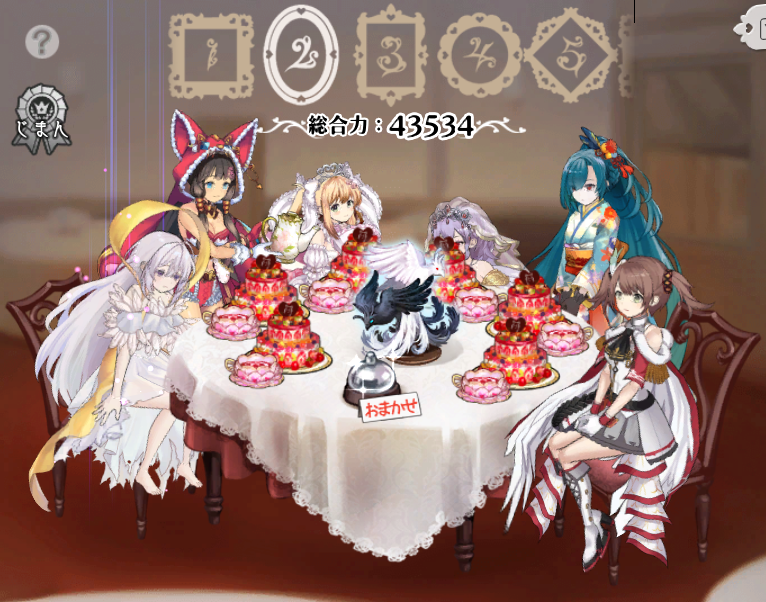

<!DOCTYPE HTML>
<html>
<head><meta name="generator" content="Hexo 3.9.0">
  <meta charset="utf-8">
  
  <title>【巨神と誓女】Ωリング因子から誓女の特性を考える | ぷらずま式改</title>
  <meta name="author" content="NPlasma">

  
  <meta name="description" content="NPlasmaの個人メモ">
  

  

  <meta name="viewport" content="width=device-width, initial-scale=1, maximum-scale=1">

  <meta property="og:title" content="【巨神と誓女】Ωリング因子から誓女の特性を考える">
  <meta property="og:site_name" content="ぷらずま式改">

  
  

  
    <meta property="og:image" content="/img/ogp.png">
  

  <!-- ogp -->
  
    
      <meta name="description" content="本記事ではDMM GAMES1において配信中のゲーム 巨神と誓女 のシステム Ωリング について、誓女の背景と絡めて考察する。これまでに公開された巨神2のシナリオや、誓女の設定についてのネタバレを含むため、今更かもしれないが注意してほしい。 また、筆者が所持していない誓女については伝聞をもとにした記述しかできないことをお許し頂きたい。3">
<meta name="keywords" content="ソシャゲ,巨神と誓女,考察">
<meta property="og:type" content="article">
<meta property="og:title" content="【巨神と誓女】Ωリング因子から誓女の特性を考える">
<meta property="og:url" content="http://elleonard.github.io/nplus_doc/2021/06/02/game/kyoshintoseijo/omega-ring/index.html">
<meta property="og:site_name" content="ぷらずま式改">
<meta property="og:description" content="本記事ではDMM GAMES1において配信中のゲーム 巨神と誓女 のシステム Ωリング について、誓女の背景と絡めて考察する。これまでに公開された巨神2のシナリオや、誓女の設定についてのネタバレを含むため、今更かもしれないが注意してほしい。 また、筆者が所持していない誓女については伝聞をもとにした記述しかできないことをお許し頂きたい。3">
<meta property="og:locale" content="ja">
<meta property="og:image" content="http://elleonard.github.io/nplus_doc/2021/06/02/game/kyoshintoseijo/omega-ring/shangri-la.png">
<meta property="og:updated_time" content="2021-06-03T17:35:08.844Z">
<meta name="twitter:card" content="summary">
<meta name="twitter:title" content="【巨神と誓女】Ωリング因子から誓女の特性を考える">
<meta name="twitter:description" content="本記事ではDMM GAMES1において配信中のゲーム 巨神と誓女 のシステム Ωリング について、誓女の背景と絡めて考察する。これまでに公開された巨神2のシナリオや、誓女の設定についてのネタバレを含むため、今更かもしれないが注意してほしい。 また、筆者が所持していない誓女については伝聞をもとにした記述しかできないことをお許し頂きたい。3">
<meta name="twitter:image" content="http://elleonard.github.io/nplus_doc/2021/06/02/game/kyoshintoseijo/omega-ring/shangri-la.png">
<meta name="twitter:creator" content="@elleonard_f">
    
    <meta name="twitter:image" content="http://elleonard.github.io/nplus_doc/img/ogp.png">
  

  <link rel="alternate" href="/nplus_doc/atom.xml" title="ぷらずま式改" type="application/atom+xml">
  <link rel="stylesheet" href="/nplus_doc/css/style.css" media="screen" type="text/css">
  <!--[if lt IE 9]><script src="//html5shiv.googlecode.com/svn/trunk/html5.js"></script><![endif]-->
  


  <link rel="apple-touch-icon" sizes="180x180" href="/nplus_doc/favicon/apple-touch-icon.png">
  <link rel="icon" type="image/png" sizes="32x32" href="/nplus_doc//favicon/favicon-32x32.png">
  <link rel="icon" type="image/png" sizes="16x16" href="/nplus_doc//favicon/favicon-16x16.png">
  <link rel="manifest" href="/nplus_doc//favicon/site.webmanifest">
  <link rel="mask-icon" href="/nplus_doc//favicon/safari-pinned-tab.svg" color="#5bbad5">
  <meta name="msapplication-TileColor" content="#da532c">
  <meta name="theme-color" content="#ffffff">
  <script src="https://kit.fontawesome.com/b51cad8f00.js" crossorigin="anonymous"></script>
</head>
</html>

<body>
  <header id="header" class="inner"><div class="alignleft">
  <h1><a href="/nplus_doc/">ぷらずま式改</a></h1>
  <h2><a href="/nplus_doc/">NPlasma個人メモ</a></h2>
</div>
<nav id="main-nav" class="alignright">
  <ul>
    
      <li><a href="/">Home</a></li>
    
      <li><a href="/nplus_doc/2016/05/29/about/">About</a></li>
    
      <li><a href="https://twitter.com/elleonard_f">Twitter</a></li>
    
      <li><a href="https://github.com/elleonard">GitHub</a></li>
    
      <li><a href="/nplus_doc/2018/02/09/game/fate/fgo/fgo-link/">FGO</a></li>
    
  </ul>
  <div class="clearfix"></div>
</nav>
<div class="clearfix"></div></header>
  <div id="content" class="inner">
    <div id="main-col" class="alignleft"><div id="wrapper"><article class="post">
  
  <div class="post-content">
    <header>
      
        <div class="icon"></div>
        <time datetime="2021-06-02T14:06:24.000Z"><a href="/nplus_doc/2021/06/02/game/kyoshintoseijo/omega-ring/">2021-06-02</a></time>
      
      
  
    <h1 class="title">【巨神と誓女】Ωリング因子から誓女の特性を考える</h1>
  

    </header>
    <div class="entry">
      
        <div id="toc" class="toc-article">
          <p class="toc-title">目次</p>
          <ol class="toc"><li class="toc-item toc-level-1"><a class="toc-link" href="#前提"><span class="toc-text">前提</span></a><ol class="toc-child"><li class="toc-item toc-level-2"><a class="toc-link" href="#Ωリングとは"><span class="toc-text">Ωリングとは</span></a></li><li class="toc-item toc-level-2"><a class="toc-link" href="#Ωリング因子"><span class="toc-text">Ωリング因子</span></a></li></ol></li><li class="toc-item toc-level-1"><a class="toc-link" href="#Ωリングの誓女に対する意味"><span class="toc-text">Ωリングの誓女に対する意味</span></a><ol class="toc-child"><li class="toc-item toc-level-2"><a class="toc-link" href="#誓女が用いる神器"><span class="toc-text">誓女が用いる神器</span></a><ol class="toc-child"><li class="toc-item toc-level-3"><a class="toc-link" href="#What-a-wonderful-world"><span class="toc-text">What a wonderful world</span></a></li><li class="toc-item toc-level-3"><a class="toc-link" href="#バレットタイム"><span class="toc-text">バレットタイム</span></a></li><li class="toc-item toc-level-3"><a class="toc-link" href="#霞み燐月"><span class="toc-text">霞み燐月</span></a></li><li class="toc-item toc-level-3"><a class="toc-link" href="#ヘヴィカーニバル"><span class="toc-text">ヘヴィカーニバル</span></a></li></ol></li><li class="toc-item toc-level-2"><a class="toc-link" href="#誓女の種族・属性"><span class="toc-text">誓女の種族・属性</span></a><ol class="toc-child"><li class="toc-item toc-level-3"><a class="toc-link" href="#轟艦カテドラル"><span class="toc-text">轟艦カテドラル</span></a></li><li class="toc-item toc-level-3"><a class="toc-link" href="#皇龍ファフニール"><span class="toc-text">皇龍ファフニール</span></a></li><li class="toc-item toc-level-3"><a class="toc-link" href="#シャングリラ"><span class="toc-text">シャングリラ</span></a></li><li class="toc-item toc-level-3"><a class="toc-link" href="#エイデュアの禁書"><span class="toc-text">エイデュアの禁書</span></a></li><li class="toc-item toc-level-3"><a class="toc-link" href="#meats-meets-girl（確度低め）"><span class="toc-text">meats meets girl（確度低め）</span></a></li><li class="toc-item toc-level-3"><a class="toc-link" href="#ジョーカー"><span class="toc-text">ジョーカー</span></a></li><li class="toc-item toc-level-3"><a class="toc-link" href="#セイクリッド・セイヴァー"><span class="toc-text">セイクリッド・セイヴァー</span></a></li><li class="toc-item toc-level-3"><a class="toc-link" href="#アンダーワールド"><span class="toc-text">アンダーワールド</span></a></li></ol></li><li class="toc-item toc-level-2"><a class="toc-link" href="#誓女の活躍する舞台・所属"><span class="toc-text">誓女の活躍する舞台・所属</span></a><ol class="toc-child"><li class="toc-item toc-level-3"><a class="toc-link" href="#セレスティアルガーデン"><span class="toc-text">セレスティアルガーデン</span></a></li><li class="toc-item toc-level-3"><a class="toc-link" href="#Live-the-life"><span class="toc-text">Live the life</span></a></li><li class="toc-item toc-level-3"><a class="toc-link" href="#Hero’s-come-back"><span class="toc-text">Hero’s come back!!</span></a></li></ol></li><li class="toc-item toc-level-2"><a class="toc-link" href="#誓女の衣装"><span class="toc-text">誓女の衣装</span></a><ol class="toc-child"><li class="toc-item toc-level-3"><a class="toc-link" href="#サウザンズメガフレイム"><span class="toc-text">サウザンズメガフレイム</span></a></li><li class="toc-item toc-level-3"><a class="toc-link" href="#ビューティハーツ（確度低め）"><span class="toc-text">ビューティハーツ（確度低め）</span></a></li></ol></li><li class="toc-item toc-level-2"><a class="toc-link" href="#分類不明"><span class="toc-text">分類不明</span></a><ol class="toc-child"><li class="toc-item toc-level-3"><a class="toc-link" href="#ドレッドノート～主役はアタシ～"><span class="toc-text">ドレッドノート～主役はアタシ～</span></a></li><li class="toc-item toc-level-3"><a class="toc-link" href="#もふもふしたい"><span class="toc-text">もふもふしたい</span></a></li><li class="toc-item toc-level-3"><a class="toc-link" href="#ポップンキュート"><span class="toc-text">ポップンキュート</span></a></li></ol></li></ol></li><li class="toc-item toc-level-1"><a class="toc-link" href="#まとめ"><span class="toc-text">まとめ</span></a></li></ol>
        </div>
        <p>本記事ではDMM GAMES<sup class="footnote-ref"><a href="#fn1" id="fnref1" title="R版はFANZA GAMES。">1</a></sup>において配信中のゲーム 巨神と誓女 のシステム Ωリング について、誓女の背景と絡めて考察する。<br>これまでに公開された巨神<sup class="footnote-ref"><a href="#fn2" id="fnref2" title="騎士の巨神～花嫁の巨神。">2</a></sup>のシナリオや、誓女の設定についてのネタバレを含むため、今更かもしれないが注意してほしい。</p>
<p>また、筆者が所持していない誓女については伝聞をもとにした記述しかできないことをお許し頂きたい。<sup class="footnote-ref"><a href="#fn3" id="fnref3" title="青天井で全キャラ揃えるなんて富豪の真似事はできなかったのである。とほほのほ。">3</a></sup></p>
<a id="more"></a>

<h1 id="前提"><a href="#前提" class="headerlink" title="前提"></a>前提</h1><h2 id="Ωリングとは"><a href="#Ωリングとは" class="headerlink" title="Ωリングとは"></a>Ωリングとは</h2><p>Ωリングとは、戦闘中にあるタイミングで発動する、パーティ全員による協力技のことを言う。<br>Ωリングには20種類あり、発動するΩリングの種類はパーティメンバーの構成によって決定される。</p>
<p>どのΩリングが発動するかは、パーティ編成画面のテーブルの中央に置かれたオブジェクトによって判別が可能である。</p>
<div style="text-align:center;">

<br>
Ωリングシャングリラは白と黒の鳥のオブジェクト
</div>

<h2 id="Ωリング因子"><a href="#Ωリング因子" class="headerlink" title="Ωリング因子"></a>Ωリング因子</h2><p>Ωリングごとに発現しやすさを表すポイントが設定されており、パーティ内のポイント合計値が最も高いもののうち、優先度の高いものが発動する。<br>Ωリングごとのポイントは下記の通り。<sup class="footnote-ref"><a href="#fn4" id="fnref4" title="巨神と誓女 攻略Wikiより。">4</a></sup></p>
<table><thead><tr><th style="text-align:center" rowspan="1" colspan="1">ポイント</th><th style="text-align:center" rowspan="1" colspan="1">Ωリング</th></tr></thead><tbody><tr><th style="text-align:center" rowspan="9" colspan="1">9</th><td style="text-align:left" rowspan="1" colspan="1">What a wonderful world</td></tr><tr><td style="text-align:left" rowspan="1" colspan="1">轟艦カテドラル</td></tr><tr><td style="text-align:left" rowspan="1" colspan="1">バレットタイム</td></tr><tr><td style="text-align:left" rowspan="1" colspan="1">霞み燐月</td></tr><tr><td style="text-align:left" rowspan="1" colspan="1">ヘヴィカーニバル</td></tr><tr><td style="text-align:left" rowspan="1" colspan="1">セレスティアルガーデン</td></tr><tr><td style="text-align:left" rowspan="1" colspan="1">皇龍ファフニール</td></tr><tr><td style="text-align:left" rowspan="1" colspan="1">Live the life</td></tr><tr><td style="text-align:left" rowspan="1" colspan="1">Hero's come back</td></tr><tr><th style="text-align:center" rowspan="1" colspan="1">7.5</th><td style="text-align:left" rowspan="1" colspan="1">シャングリラ</td></tr><tr><th style="text-align:center" rowspan="2" colspan="1">6.66</th><td style="text-align:left" rowspan="1" colspan="1">エイデュアの禁書</td></tr><tr><td style="text-align:left" rowspan="1" colspan="1">ドレッドノート～主役はアタシ～</td></tr><tr><th style="text-align:center" rowspan="2" colspan="1">6</th><td style="text-align:left" rowspan="1" colspan="1">サウザンズメガフレイム</td></tr><tr><td style="text-align:left" rowspan="1" colspan="1">meats meets girl</td></tr><tr><th style="text-align:center" rowspan="2" colspan="1">5</th><td style="text-align:left" rowspan="1" colspan="1">ジョーカー</td></tr><tr><td style="text-align:left" rowspan="1" colspan="1">セイクリッド・セイヴァー</td></tr><tr><th style="text-align:center" rowspan="4" colspan="1">4.5</th><td style="text-align:left" rowspan="1" colspan="1">もふもふしたい</td></tr><tr><td style="text-align:left" rowspan="1" colspan="1">ポップンキュート</td></tr><tr><td style="text-align:left" rowspan="1" colspan="1">アンダーワールド</td></tr><tr><td style="text-align:left" rowspan="1" colspan="1">ビューティーハーツ</td></tr><tr></tr></tbody></table>

<p>各誓女ごとに、それぞれのΩリングについて因子を持っているかどうかの真偽値が設定されている。<sup class="footnote-ref"><a href="#fn5" id="fnref5" title="例えば、ゲーム開始時に入手可能な☆5誓女ハルは、セレスティアルガーデン、ジョーカー、ポップンキュート、もふもふしたいの因子を持つ。">5</a></sup><br>なお、それぞれに発現しやすさを表す優先順位も存在するが、本記事ではΩリング因子がそれを持つ誓女について表す意味を中心に語るものであるため、省略する。<sup class="footnote-ref"><a href="#fn6" id="fnref6" title="もし詳細を知りたければ、攻略Wikiを参照してほしい。">6</a></sup><br>ここでは、上記のような種類のΩリングがあること、誓女ごとにΩリング因子を少なくとも1つ持つことさえ伝わればそれで良い。</p>
<h1 id="Ωリングの誓女に対する意味"><a href="#Ωリングの誓女に対する意味" class="headerlink" title="Ωリングの誓女に対する意味"></a>Ωリングの誓女に対する意味</h1><p>Ωリングはその因子を持つ誓女について、特定の要素を持った人物であることを表していると考えられる。</p>
<p>本作は美少女ゲーであるにも関わらず、誓女の情報が断片的にしか明かされないケースがほとんどである。<sup class="footnote-ref"><a href="#fn7" id="fnref7" title="信じられないかもしれないが、8節の謳と一枚絵、断片的な台詞以外に情報が明かされていない誓女が大多数を占めている。本作は巨神のシナリオを楽しむゲームであり、誓女の情報はその中で登場した際に少しだけ明らかになる類のものである。">7</a></sup><br>Ωリングは、数少ない誓女の情報を補強・推測するための重要な材料になり得る。</p>
<p>Ωリングが誓女について表す内容は、概ね下記の通りである。</p>
<ul>
<li>誓女が用いる神器</li>
<li>誓女の種族・属性</li>
<li>誓女の活躍する舞台・所属</li>
<li>誓女の衣装</li>
</ul>
<p>全てのΩリングについて確信を得ているわけではないため、筆者個人として確度が高くない場合にはそう明記しておく。</p>
<h2 id="誓女が用いる神器"><a href="#誓女が用いる神器" class="headerlink" title="誓女が用いる神器"></a>誓女が用いる神器</h2><h3 id="What-a-wonderful-world"><a href="#What-a-wonderful-world" class="headerlink" title="What a wonderful world"></a>What a wonderful world</h3><p>蓄音機。神器が楽器であるような誓女。</p>
<table><thead><tr><th style="text-align:center" rowspan="1" colspan="1">誓女</th><th style="text-align:center" rowspan="1" colspan="1">神器</th></tr></thead><tbody><tr><td style="text-align:left" rowspan="1" colspan="1">アリア</td><td style="text-align:left" rowspan="1" colspan="1">ダブルサックス</td></tr><tr><td style="text-align:left" rowspan="1" colspan="1">ヴィオラ</td><td style="text-align:left" rowspan="1" colspan="1">コントラバス</td></tr><tr><td style="text-align:left" rowspan="1" colspan="1">ジェイ</td><td style="text-align:left" rowspan="1" colspan="1">ピアノ</td></tr><tr><td style="text-align:left" rowspan="1" colspan="1">モーニィ</td><td style="text-align:left" rowspan="1" colspan="1">ドラムセット</td></tr><tr><td style="text-align:left" rowspan="1" colspan="1">エリカ</td><td style="text-align:left" rowspan="1" colspan="1">トランペット</td></tr><tr><td style="text-align:left" rowspan="1" colspan="1">シェラザード</td><td style="text-align:left" rowspan="1" colspan="1">弓</td></tr><tr></tr></tbody></table>

<p>シェラザードの神器は弓だが、 <code>かんがえてみたよ 05</code> の台詞<sup class="footnote-ref"><a href="#fn8" id="fnref8" title="「この弓が私の神器。弦を鳴らすといい音するんだ～。うちに伝わる氷の杖から作られたんだって」">8</a></sup>から、楽器であることがわかる。<br>ただし、竜語りのノンの神器は楽器だが、蓄音機因子は持たない。この理由は謎。</p>
<h3 id="バレットタイム"><a href="#バレットタイム" class="headerlink" title="バレットタイム"></a>バレットタイム</h3><p>サメ。神器が銃火器、爆発物、またはカメラなどのトリガーの概念のあるものであるような誓女。</p>
<table><thead><tr><th style="text-align:center" rowspan="1" colspan="1">誓女</th><th style="text-align:center" rowspan="1" colspan="1">神器</th></tr></thead><tbody><tr><td style="text-align:left" rowspan="1" colspan="1">カラミティ</td><td style="text-align:left" rowspan="1" colspan="1">銃を仕込んだ傘</td></tr><tr><td style="text-align:left" rowspan="1" colspan="1">ユミ/クリスマスユミ</td><td style="text-align:left" rowspan="1" colspan="1">カメラ</td></tr><tr><td style="text-align:left" rowspan="1" colspan="1">ニコル</td><td style="text-align:left" rowspan="1" colspan="1">手榴弾</td></tr><tr><td style="text-align:left" rowspan="1" colspan="1">ディージェー</td><td style="text-align:left" rowspan="1" colspan="1">電動ドリル</td></tr><tr><td style="text-align:left" rowspan="1" colspan="1">アッシュ</td><td style="text-align:left" rowspan="1" colspan="1">銃剣化した魔剣リーパー</td></tr><tr><td style="text-align:left" rowspan="1" colspan="1">ミスQ</td><td style="text-align:left" rowspan="1" colspan="1">三輪駆動バイク</td></tr><tr><td style="text-align:left" rowspan="1" colspan="1">エリカ</td><td style="text-align:left" rowspan="1" colspan="1">爆発物を仕込んだトランペット</td></tr><tr><td style="text-align:left" rowspan="1" colspan="1">アンジェ</td><td style="text-align:left" rowspan="1" colspan="1">ガトリングガン</td></tr><tr><td style="text-align:left" rowspan="1" colspan="1">エドガー</td><td style="text-align:left" rowspan="1" colspan="1">マスケット銃</td></tr><tr><td style="text-align:left" rowspan="1" colspan="1">ユルユル</td><td style="text-align:left" rowspan="1" colspan="1">エネルギー砲</td></tr><tr></tr></tbody></table>

<p>ミスQのバイクのみやや怪しい感じがする神器だが、覚醒後の絵から、ハンドル部分のトリガーを引くと色々変形したり火を吹いたりするようである。<br>エリカがバレットタイム因子を持つのは、花嫁の巨神シナリオや彼女の一枚絵を見た人ならばわかってくれるだろうが、あまりにもつらい。</p>
<h3 id="霞み燐月"><a href="#霞み燐月" class="headerlink" title="霞み燐月"></a>霞み燐月</h3><p>剣。神器として剣を用いる誓女。</p>
<table><thead><tr><th style="text-align:center" rowspan="1" colspan="1">誓女</th><th style="text-align:center" rowspan="1" colspan="1">神器</th></tr></thead><tbody><tr><td style="text-align:left" rowspan="1" colspan="1">つう</td><td style="text-align:left" rowspan="1" colspan="1">刀</td></tr><tr><td style="text-align:left" rowspan="1" colspan="1">オーロラ</td><td style="text-align:left" rowspan="1" colspan="1">聖剣オーロラ</td></tr><tr><td style="text-align:left" rowspan="1" colspan="1">アッシュ</td><td style="text-align:left" rowspan="1" colspan="1">魔剣リーパー</td></tr><tr><td style="text-align:left" rowspan="1" colspan="1">セラフ</td><td style="text-align:left" rowspan="1" colspan="1">魔剣リーパー</td></tr><tr><td style="text-align:left" rowspan="1" colspan="1">黒騎士</td><td style="text-align:left" rowspan="1" colspan="1">魔剣リーパー</td></tr><tr><td style="text-align:left" rowspan="1" colspan="1">ダーク・エンジェル</td><td style="text-align:left" rowspan="1" colspan="1">光る剣</td></tr><tr><td style="text-align:left" rowspan="1" colspan="1">ヒエン</td><td style="text-align:left" rowspan="1" colspan="1">剣玉</td></tr><tr><td style="text-align:left" rowspan="1" colspan="1">キョウ</td><td style="text-align:left" rowspan="1" colspan="1">レーザーヤッパ</td></tr><tr><td style="text-align:left" rowspan="1" colspan="1">デュラハン</td><td style="text-align:left" rowspan="1" colspan="1">サムライブレード</td></tr><tr><td style="text-align:left" rowspan="1" colspan="1">ペロー</td><td style="text-align:left" rowspan="1" colspan="1">光線銃</td></tr><tr><td style="text-align:left" rowspan="1" colspan="1">エヴァ</td><td style="text-align:left" rowspan="1" colspan="1">魔剣リーパー</td></tr><tr></tr></tbody></table>

<p>ペローの光線銃はかなり怪しい感じがする。<br>ヒエンの剣玉は神器名が <code>剣は剣でも剣玉っす</code> となっており、これを剣カテゴリとしているのだろう。<sup class="footnote-ref"><a href="#fn9" id="fnref9" title="彼女自身は二度と人を斬るまいと誓っているため、腰の刀は抜かない。">9</a></sup></p>
<h3 id="ヘヴィカーニバル"><a href="#ヘヴィカーニバル" class="headerlink" title="ヘヴィカーニバル"></a>ヘヴィカーニバル</h3><p>ダンベル。重量級の武器を神器とする誓女。</p>
<table><thead><tr><th style="text-align:center" rowspan="1" colspan="1">誓女</th><th style="text-align:center" rowspan="1" colspan="1">神器</th></tr></thead><tbody><tr><td style="text-align:left" rowspan="1" colspan="1">ユーユ</td><td style="text-align:left" rowspan="1" colspan="1">ハンマー、両手斧</td></tr><tr><td style="text-align:left" rowspan="1" colspan="1">サヒメ</td><td style="text-align:left" rowspan="1" colspan="1">大槌</td></tr><tr><td style="text-align:left" rowspan="1" colspan="1">コレット</td><td style="text-align:left" rowspan="1" colspan="1">鉄の棘に覆われた巨大人参</td></tr><tr><td style="text-align:left" rowspan="1" colspan="1">アンジェ</td><td style="text-align:left" rowspan="1" colspan="1">ガトリングガン</td></tr><tr><td style="text-align:left" rowspan="1" colspan="1">ガン＆レット</td><td style="text-align:left" rowspan="1" colspan="1">巨大な機械の手</td></tr><tr><td style="text-align:left" rowspan="1" colspan="1">サコ</td><td style="text-align:left" rowspan="1" colspan="1">重量感のある鉤爪、ナックル</td></tr><tr><td style="text-align:left" rowspan="1" colspan="1">ミト</td><td style="text-align:left" rowspan="1" colspan="1">巨大なナックル</td></tr><tr><td style="text-align:left" rowspan="1" colspan="1">ステフ</td><td style="text-align:left" rowspan="1" colspan="1">UFO</td></tr><tr></tr></tbody></table>

<h2 id="誓女の種族・属性"><a href="#誓女の種族・属性" class="headerlink" title="誓女の種族・属性"></a>誓女の種族・属性</h2><h3 id="轟艦カテドラル"><a href="#轟艦カテドラル" class="headerlink" title="轟艦カテドラル"></a>轟艦カテドラル</h3><p>機械技術によって作られた存在や、身体が機械化した誓女。<br>または、機械技術に精通した誓女。</p>
<table><thead><tr><th style="text-align:center" rowspan="1" colspan="1">誓女</th><th style="text-align:center" rowspan="1" colspan="1">機械要素</th></tr></thead><tbody><tr><td style="text-align:left" rowspan="1" colspan="1">あいおん</td><td style="text-align:left" rowspan="1" colspan="1">機械知性</td></tr><tr><td style="text-align:left" rowspan="1" colspan="1">スピードスター</td><td style="text-align:left" rowspan="1" colspan="1">ソニックレッグ</td></tr><tr><td style="text-align:left" rowspan="1" colspan="1">ディージェー</td><td style="text-align:left" rowspan="1" colspan="1">パワードスーツの改良やメンテナンスを自分で行う</td></tr><tr><td style="text-align:left" rowspan="1" colspan="1">モトコ</td><td style="text-align:left" rowspan="1" colspan="1">車の擬人化</td></tr><tr><td style="text-align:left" rowspan="1" colspan="1">ミレイ</td><td style="text-align:left" rowspan="1" colspan="1">機械人形？<sup class="footnote-ref"><a href="#fn10" id="fnref10" title="2番目の謳から、彼女が人形であることは確定。一枚絵の背景からあいおんとほぼ同時代の存在と見られるため、おそらくは機械人形だろう。">10</a></sup></td></tr><tr><td style="text-align:left" rowspan="1" colspan="1">アンジェ</td><td style="text-align:left" rowspan="1" colspan="1">腕がガトリングガン</td></tr><tr><td style="text-align:left" rowspan="1" colspan="1">ガン＆レット</td><td style="text-align:left" rowspan="1" colspan="1">腕が巨大な機械</td></tr><tr><td style="text-align:left" rowspan="1" colspan="1">デュラハン</td><td style="text-align:left" rowspan="1" colspan="1">首から下は全てサイボーグ</td></tr><tr><td style="text-align:left" rowspan="1" colspan="1">ユルユル</td><td style="text-align:left" rowspan="1" colspan="1">天才発明家</td></tr><tr><td style="text-align:left" rowspan="1" colspan="1">ピノ</td><td style="text-align:left" rowspan="1" colspan="1">機械人形</td></tr><tr></tr></tbody></table>

<h3 id="皇龍ファフニール"><a href="#皇龍ファフニール" class="headerlink" title="皇龍ファフニール"></a>皇龍ファフニール</h3><p>竜、真龍に直接関連した誓女。</p>
<table><thead><tr><th style="text-align:center" rowspan="1" colspan="1">誓女</th><th style="text-align:center" rowspan="1" colspan="1">竜要素</th></tr></thead><tbody><tr><td style="text-align:left" rowspan="1" colspan="1">龍殺しのケイ</td><td style="text-align:left" rowspan="1" colspan="1">真龍を直接撃破した</td></tr><tr><td style="text-align:left" rowspan="1" colspan="1">かがり</td><td style="text-align:left" rowspan="1" colspan="1">竜の血をひく</td></tr><tr><td style="text-align:left" rowspan="1" colspan="1">竜語りのノン</td><td style="text-align:left" rowspan="1" colspan="1">真龍との間に子をもうけた</td></tr><tr><td style="text-align:left" rowspan="1" colspan="1">トゥルー</td><td style="text-align:left" rowspan="1" colspan="1">龍の心臓を持ち帰った</td></tr><tr><td style="text-align:left" rowspan="1" colspan="1">ガブリン</td><td style="text-align:left" rowspan="1" colspan="1">竜と心通わす</td></tr><tr><td style="text-align:left" rowspan="1" colspan="1">竜母のミラ</td><td style="text-align:left" rowspan="1" colspan="1">竜の守人</td></tr><tr><td style="text-align:left" rowspan="1" colspan="1">ブリトニー</td><td style="text-align:left" rowspan="1" colspan="1">真の名前が迅竜ヴリトラ</td></tr><tr><td style="text-align:left" rowspan="1" colspan="1">BB</td><td style="text-align:left" rowspan="1" colspan="1">竜の肉を喰った</td></tr><tr><td style="text-align:left" rowspan="1" colspan="1">鉄腕のメル</td><td style="text-align:left" rowspan="1" colspan="1">竜狩人</td></tr><tr></tr></tbody></table>

<p>トゥルーはこの因子を持つが、バレンタイントゥルーは持たない。<br>竜の心臓を持ち帰った時のトゥルーよりも幼い時系列のトゥルーだったのかもしれない。</p>
<h3 id="シャングリラ"><a href="#シャングリラ" class="headerlink" title="シャングリラ"></a>シャングリラ</h3><p>ノイア、ユミル、ウロボロスいずれかの力を直接その身に宿した誓女。</p>
<table><thead><tr><th style="text-align:center" rowspan="1" colspan="1">誓女</th><th style="text-align:center" rowspan="1" colspan="1">ノイア要素</th></tr></thead><tbody><tr><td style="text-align:left" rowspan="1" colspan="1">あいおん</td><td style="text-align:left" rowspan="1" colspan="1">S.P.A.R.T.A.Xがばらまいた咒歌を発見した</td></tr><tr><td style="text-align:left" rowspan="1" colspan="1">アイノ</td><td style="text-align:left" rowspan="1" colspan="1">ユミ共々、名前からノイア/ユミルに関連してそう</td></tr><tr><td style="text-align:left" rowspan="1" colspan="1">アスタル/振り袖アスタル</td><td style="text-align:left" rowspan="1" colspan="1">父によってノイアの力をその身に封じられた</td></tr><tr><td style="text-align:left" rowspan="1" colspan="1">レディX</td><td style="text-align:left" rowspan="1" colspan="1">謳3番 究極の生命はおそらくウロボロス</td></tr><tr><td style="text-align:left" rowspan="1" colspan="1">ユミ/クリスマスユミ</td><td style="text-align:left" rowspan="1" colspan="1">アイノ同様</td></tr><tr><td style="text-align:left" rowspan="1" colspan="1">カイネ</td><td style="text-align:left" rowspan="1" colspan="1">あの御方<sup class="footnote-ref"><a href="#fn11" id="fnref11" title="おそらくノイア。">11</a></sup>に魂を捧げ、始祖たる力と永遠の命を授かった</td></tr><tr><td style="text-align:left" rowspan="1" colspan="1">セラフ</td><td style="text-align:left" rowspan="1" colspan="1">魔剣リーパー<sup class="footnote-ref"><a href="#fn12" id="fnref12" title="ノイアの力。">12</a></sup>が身体の一部になった<sup class="footnote-ref"><a href="#fn13" id="fnref13" title="かんがえてみたよ 05より。エヴァとアッシュは身体に取り込んだわけではないため、シャングリラ因子を持たないのだろう。">13</a></sup></td></tr><tr><td style="text-align:left" rowspan="1" colspan="1">バレンタインファラオちゃん</td><td style="text-align:left" rowspan="1" colspan="1">謎</td></tr><tr></tr></tbody></table>

<p>アイノとユミは名前からノイアとユミルに何かしらの関係があるものと思われるが、詳細は明かされていない。</p>
<p>そして、更に謎なのはバレンタインファラオちゃんである。<br>性能面でも大騒ぎになっていたが、オリジナルのファラオちゃんが持たないシャングリラ因子を持って現れた上、後述のエイデュアの禁書因子を失っていたため、シナリオ上で彼女に重要な変化があったものと推測される。<br>同じく古代魔法王国王族であるカーメンについて所持する因子がわかれば、何かヒントになるかもしれないが、筆者はカーメンを所持していない。</p>
<h3 id="エイデュアの禁書"><a href="#エイデュアの禁書" class="headerlink" title="エイデュアの禁書"></a>エイデュアの禁書</h3><p>魔法使いや、魔法技術によって作られた存在であるような誓女。</p>
<table><thead><tr><th style="text-align:center" rowspan="1" colspan="1">誓女</th><th style="text-align:center" rowspan="1" colspan="1">魔法要素</th></tr></thead><tbody><tr><td style="text-align:left" rowspan="1" colspan="1">ファラオちゃん</td><td style="text-align:left" rowspan="1" colspan="1">古代魔法王国王族</td></tr><tr><td style="text-align:left" rowspan="1" colspan="1">メガエラ</td><td style="text-align:left" rowspan="1" colspan="1">氷の魔女の使い魔</td></tr><tr><td style="text-align:left" rowspan="1" colspan="1">シャルバート</td><td style="text-align:left" rowspan="1" colspan="1">氷の魔女</td></tr><tr><td style="text-align:left" rowspan="1" colspan="1">パネコ</td><td style="text-align:left" rowspan="1" colspan="1">氷の魔女</td></tr><tr><td style="text-align:left" rowspan="1" colspan="1">エルメ</td><td style="text-align:left" rowspan="1" colspan="1">ホムンクルス</td></tr><tr><td style="text-align:left" rowspan="1" colspan="1">ヴードゥー/クリスマスヴードゥー</td><td style="text-align:left" rowspan="1" colspan="1">呪術師</td></tr><tr><td style="text-align:left" rowspan="1" colspan="1">ヘルミーラ</td><td style="text-align:left" rowspan="1" colspan="1">魔法技術によって作られたミイラ？</td></tr><tr><td style="text-align:left" rowspan="1" colspan="1">シーア</td><td style="text-align:left" rowspan="1" colspan="1">魔法使い</td></tr><tr><td style="text-align:left" rowspan="1" colspan="1">ウル</td><td style="text-align:left" rowspan="1" colspan="1">始まりの魔術師</td></tr><tr><td style="text-align:left" rowspan="1" colspan="1">ミーティア</td><td style="text-align:left" rowspan="1" colspan="1">ヴァルマン魔法帝国の戦略魔道士</td></tr><tr><td style="text-align:left" rowspan="1" colspan="1">アテナ</td><td style="text-align:left" rowspan="1" colspan="1">魔法学園の先生</td></tr><tr><td style="text-align:left" rowspan="1" colspan="1">ラッチ</td><td style="text-align:left" rowspan="1" colspan="1">魔法学園の生徒</td></tr><tr><td style="text-align:left" rowspan="1" colspan="1">リュカ</td><td style="text-align:left" rowspan="1" colspan="1">ネクロマンサー</td></tr><tr><td style="text-align:left" rowspan="1" colspan="1">シカリオ</td><td style="text-align:left" rowspan="1" colspan="1">ヴァルマン魔法帝国の魔法使い</td></tr><tr><td style="text-align:left" rowspan="1" colspan="1">カリスマ</td><td style="text-align:left" rowspan="1" colspan="1">人の髪が変じた魔法生物？<sup class="footnote-ref"><a href="#fn14" id="fnref14" title="謳7～8 髪は人から出でて 人でないもの 人が生んだ人ならぬ生命をご存じ？ から推測。ノイアの髪から真龍が生まれたことにも関連しているかもしれない。">14</a></sup></td></tr><tr><td style="text-align:left" rowspan="1" colspan="1">ガーネット</td><td style="text-align:left" rowspan="1" colspan="1">宝石病患者</td></tr><tr><td style="text-align:left" rowspan="1" colspan="1">シェラザード</td><td style="text-align:left" rowspan="1" colspan="1">氷の魔女</td></tr><tr><td style="text-align:left" rowspan="1" colspan="1">マグダ</td><td style="text-align:left" rowspan="1" colspan="1">魔法使い</td></tr><tr></tr></tbody></table>

<p>魔法学園の生徒であるにも関わらず、ソフィが所持していないのは腕力（まほう）だからだろうか。</p>
<h3 id="meats-meets-girl（確度低め）"><a href="#meats-meets-girl（確度低め）" class="headerlink" title="meats meets girl（確度低め）"></a>meats meets girl（確度低め）</h3><p>肉食系女子や、食物に深く関連した誓女？</p>
<table><thead><tr><th style="text-align:center" rowspan="1" colspan="1">誓女</th><th style="text-align:center" rowspan="1" colspan="1">食物要素</th></tr></thead><tbody><tr><td style="text-align:left" rowspan="1" colspan="1">ユーユ</td><td style="text-align:left" rowspan="1" colspan="1"></td></tr><tr><td style="text-align:left" rowspan="1" colspan="1">ウルリカ</td><td style="text-align:left" rowspan="1" colspan="1">人狼</td></tr><tr><td style="text-align:left" rowspan="1" colspan="1">モーニィ</td><td style="text-align:left" rowspan="1" colspan="1">食いしん坊キャラ</td></tr><tr><td style="text-align:left" rowspan="1" colspan="1">かがり</td><td style="text-align:left" rowspan="1" colspan="1"></td></tr><tr><td style="text-align:left" rowspan="1" colspan="1">いちごちゃん</td><td style="text-align:left" rowspan="1" colspan="1">血が大好き</td></tr><tr><td style="text-align:left" rowspan="1" colspan="1">ユミ/クリスマスユミ</td><td style="text-align:left" rowspan="1" colspan="1"></td></tr><tr><td style="text-align:left" rowspan="1" colspan="1">ニコル</td><td style="text-align:left" rowspan="1" colspan="1"></td></tr><tr><td style="text-align:left" rowspan="1" colspan="1">サヒメ</td><td style="text-align:left" rowspan="1" colspan="1"></td></tr><tr><td style="text-align:left" rowspan="1" colspan="1">バレンタインビューティ</td><td style="text-align:left" rowspan="1" colspan="1">チョコ</td></tr><tr><td style="text-align:left" rowspan="1" colspan="1">バレンタインアリシア</td><td style="text-align:left" rowspan="1" colspan="1">チョコ</td></tr><tr><td style="text-align:left" rowspan="1" colspan="1">バレンタイントゥルー</td><td style="text-align:left" rowspan="1" colspan="1">チョコ</td></tr><tr><td style="text-align:left" rowspan="1" colspan="1">バレンタインファラオちゃん</td><td style="text-align:left" rowspan="1" colspan="1">チョコ</td></tr><tr><td style="text-align:left" rowspan="1" colspan="1">ヒエン</td><td style="text-align:left" rowspan="1" colspan="1">酒と団子が好き</td></tr><tr><td style="text-align:left" rowspan="1" colspan="1">チョコ</td><td style="text-align:left" rowspan="1" colspan="1">名前がチョコだから？</td></tr><tr><td style="text-align:left" rowspan="1" colspan="1">レイオマノ</td><td style="text-align:left" rowspan="1" colspan="1"></td></tr><tr><td style="text-align:left" rowspan="1" colspan="1">ミシル</td><td style="text-align:left" rowspan="1" colspan="1"></td></tr><tr><td style="text-align:left" rowspan="1" colspan="1">ビューティ</td><td style="text-align:left" rowspan="1" colspan="1">飲食店で働く？</td></tr><tr><td style="text-align:left" rowspan="1" colspan="1">トゥルー</td><td style="text-align:left" rowspan="1" colspan="1"></td></tr><tr><td style="text-align:left" rowspan="1" colspan="1">ガーネット</td><td style="text-align:left" rowspan="1" colspan="1"></td></tr><tr><td style="text-align:left" rowspan="1" colspan="1">ガブリン</td><td style="text-align:left" rowspan="1" colspan="1"></td></tr><tr><td style="text-align:left" rowspan="1" colspan="1">ティターニア</td><td style="text-align:left" rowspan="1" colspan="1"></td></tr><tr><td style="text-align:left" rowspan="1" colspan="1">ステフ</td><td style="text-align:left" rowspan="1" colspan="1"></td></tr><tr><td style="text-align:left" rowspan="1" colspan="1">ブリトニー</td><td style="text-align:left" rowspan="1" colspan="1"></td></tr><tr><td style="text-align:left" rowspan="1" colspan="1">クリス</td><td style="text-align:left" rowspan="1" colspan="1"></td></tr><tr></tr></tbody></table>

<p>序盤お世話になる因子でありながら、詳細がほとんどわかっていない。<br>バレンタインキャラが全てこの因子を持つことから、食物に関わる誓女はこの因子を持つものと推測される。<sup class="footnote-ref"><a href="#fn15" id="fnref15" title="筆者は未所持だが、クラウもこの因子を持つらしい。">15</a></sup></p>
<p>単純にお肉が好きな子たちなのかもしれない。</p>
<h3 id="ジョーカー"><a href="#ジョーカー" class="headerlink" title="ジョーカー"></a>ジョーカー</h3><p>裏切り者、仲間/家族殺し、怪盗、ヴィラン、汚れ役の属性を持つ誓女。</p>
<table><thead><tr><th style="text-align:center" rowspan="1" colspan="1">誓女</th><th style="text-align:center" rowspan="1" colspan="1">ジョーカー要素</th></tr></thead><tbody><tr><td style="text-align:left" rowspan="1" colspan="1">ハル</td><td style="text-align:left" rowspan="1" colspan="1">処刑人</td></tr><tr><td style="text-align:left" rowspan="1" colspan="1">ウルリカ</td><td style="text-align:left" rowspan="1" colspan="1">人狼</td></tr><tr><td style="text-align:left" rowspan="1" colspan="1">ジェイ</td><td style="text-align:left" rowspan="1" colspan="1">帝国と通じ、ミンストレルを裏切っていた</td></tr><tr><td style="text-align:left" rowspan="1" colspan="1">Dr.ビクター</td><td style="text-align:left" rowspan="1" colspan="1">母殺し</td></tr><tr><td style="text-align:left" rowspan="1" colspan="1">ヨル</td><td style="text-align:left" rowspan="1" colspan="1">混沌に落ち、姉を引きずり込もうとする</td></tr><tr><td style="text-align:left" rowspan="1" colspan="1">オーロラ</td><td style="text-align:left" rowspan="1" colspan="1">第三教会から離反する</td></tr><tr><td style="text-align:left" rowspan="1" colspan="1">ミスQ</td><td style="text-align:left" rowspan="1" colspan="1">親殺し？<sup class="footnote-ref"><a href="#fn16" id="fnref16" title="謳の内容から、親でなくとも大人を殺してはいるだろう。">16</a></sup></td></tr><tr><td style="text-align:left" rowspan="1" colspan="1">カイネ</td><td style="text-align:left" rowspan="1" colspan="1">約束してたけど寝過ごした？</td></tr><tr><td style="text-align:left" rowspan="1" colspan="1">ヴードゥー/クリスマスヴードゥー</td><td style="text-align:left" rowspan="1" colspan="1">メガロポリスのヴィラン</td></tr><tr><td style="text-align:left" rowspan="1" colspan="1">黒騎士</td><td style="text-align:left" rowspan="1" colspan="1">一枚絵の台詞より<sup class="footnote-ref"><a href="#fn17" id="fnref17" title="「欲しかったのはこんな力か？ 命を弄び、罪なき者を殺すのが」">17</a></sup></td></tr><tr><td style="text-align:left" rowspan="1" colspan="1">ダーク・エンジェル</td><td style="text-align:left" rowspan="1" colspan="1">メガロポリスのヴィラン</td></tr><tr><td style="text-align:left" rowspan="1" colspan="1">ラッチ</td><td style="text-align:left" rowspan="1" colspan="1">ヨアヒムに操られる</td></tr><tr><td style="text-align:left" rowspan="1" colspan="1">ガンビット</td><td style="text-align:left" rowspan="1" colspan="1">地下チェスプレイヤー</td></tr><tr><td style="text-align:left" rowspan="1" colspan="1">ミンサー/花嫁ミンサー</td><td style="text-align:left" rowspan="1" colspan="1">拷問官</td></tr><tr><td style="text-align:left" rowspan="1" colspan="1">あーや</td><td style="text-align:left" rowspan="1" colspan="1">命に従い兄弟同然の仲間と殺し合う</td></tr><tr><td style="text-align:left" rowspan="1" colspan="1">魔眼のルイ</td><td style="text-align:left" rowspan="1" colspan="1">三歳の弟は二度と目を開けなかった</td></tr><tr></tr></tbody></table>

<h3 id="セイクリッド・セイヴァー"><a href="#セイクリッド・セイヴァー" class="headerlink" title="セイクリッド・セイヴァー"></a>セイクリッド・セイヴァー</h3><p>ジョーカーと対になる因子と思われる。正義の味方や英雄の要素を持つ誓女。</p>
<table><thead><tr><th style="text-align:center" rowspan="1" colspan="1">誓女</th><th style="text-align:center" rowspan="1" colspan="1">聖要素</th></tr></thead><tbody><tr><td style="text-align:left" rowspan="1" colspan="1">アリア</td><td style="text-align:left" rowspan="1" colspan="1"></td></tr><tr><td style="text-align:left" rowspan="1" colspan="1">フォール</td><td style="text-align:left" rowspan="1" colspan="1"></td></tr><tr><td style="text-align:left" rowspan="1" colspan="1">レディX</td><td style="text-align:left" rowspan="1" colspan="1"></td></tr><tr><td style="text-align:left" rowspan="1" colspan="1">レディX（少女）/トナカイX</td><td style="text-align:left" rowspan="1" colspan="1"></td></tr><tr><td style="text-align:left" rowspan="1" colspan="1">ディージェー</td><td style="text-align:left" rowspan="1" colspan="1"></td></tr><tr><td style="text-align:left" rowspan="1" colspan="1">オーロラ</td><td style="text-align:left" rowspan="1" colspan="1"></td></tr><tr><td style="text-align:left" rowspan="1" colspan="1">アッシュ</td><td style="text-align:left" rowspan="1" colspan="1"></td></tr><tr><td style="text-align:left" rowspan="1" colspan="1">エルメ</td><td style="text-align:left" rowspan="1" colspan="1"></td></tr><tr><td style="text-align:left" rowspan="1" colspan="1">ライカ/振り袖ライカ</td><td style="text-align:left" rowspan="1" colspan="1">英雄と呼ばれた</td></tr><tr><td style="text-align:left" rowspan="1" colspan="1">シーア</td><td style="text-align:left" rowspan="1" colspan="1"></td></tr><tr><td style="text-align:left" rowspan="1" colspan="1">ウル</td><td style="text-align:left" rowspan="1" colspan="1"></td></tr><tr><td style="text-align:left" rowspan="1" colspan="1">黒騎士</td><td style="text-align:left" rowspan="1" colspan="1"></td></tr><tr><td style="text-align:left" rowspan="1" colspan="1">サヒメ</td><td style="text-align:left" rowspan="1" colspan="1"></td></tr><tr><td style="text-align:left" rowspan="1" colspan="1">アテナ</td><td style="text-align:left" rowspan="1" colspan="1"></td></tr><tr><td style="text-align:left" rowspan="1" colspan="1">ヒエン</td><td style="text-align:left" rowspan="1" colspan="1"></td></tr><tr><td style="text-align:left" rowspan="1" colspan="1">ストレルカ</td><td style="text-align:left" rowspan="1" colspan="1"></td></tr><tr><td style="text-align:left" rowspan="1" colspan="1">チョコ</td><td style="text-align:left" rowspan="1" colspan="1"></td></tr><tr><td style="text-align:left" rowspan="1" colspan="1">フライハイト</td><td style="text-align:left" rowspan="1" colspan="1">不正を許せない</td></tr><tr><td style="text-align:left" rowspan="1" colspan="1">エドガー</td><td style="text-align:left" rowspan="1" colspan="1"></td></tr><tr><td style="text-align:left" rowspan="1" colspan="1">ハート姫/花嫁ハート姫</td><td style="text-align:left" rowspan="1" colspan="1"></td></tr><tr><td style="text-align:left" rowspan="1" colspan="1">アシエル</td><td style="text-align:left" rowspan="1" colspan="1"></td></tr><tr><td style="text-align:left" rowspan="1" colspan="1">アリシア</td><td style="text-align:left" rowspan="1" colspan="1"></td></tr><tr><td style="text-align:left" rowspan="1" colspan="1">ソフィ</td><td style="text-align:left" rowspan="1" colspan="1"></td></tr><tr><td style="text-align:left" rowspan="1" colspan="1">ガブリン</td><td style="text-align:left" rowspan="1" colspan="1"></td></tr><tr><td style="text-align:left" rowspan="1" colspan="1">竜母のミラ</td><td style="text-align:left" rowspan="1" colspan="1"></td></tr><tr><td style="text-align:left" rowspan="1" colspan="1">エヴァ</td><td style="text-align:left" rowspan="1" colspan="1"></td></tr><tr><td style="text-align:left" rowspan="1" colspan="1">魔眼のルイ</td><td style="text-align:left" rowspan="1" colspan="1"></td></tr><tr><td style="text-align:left" rowspan="1" colspan="1">クリス</td><td style="text-align:left" rowspan="1" colspan="1"></td></tr><tr></tr></tbody></table>

<p>なんとなく性格上、正義側に寄ってるというふわっとした感じのため、具体的にどんな要素が、とは言いにくい誓女が多い。</p>
<p>アッシュとエヴァがこの因子を持ち、セラフが持っていないというのはなかなか面白い。<br>正しくあろうとすることをやめてしまったということだろう。</p>
<p>アリシアがこの要素を持つが、バレンタインアリシアは持っていない。</p>
<h3 id="アンダーワールド"><a href="#アンダーワールド" class="headerlink" title="アンダーワールド"></a>アンダーワールド</h3><p>人外の有機的生物もしくは霊魂の誓女。</p>
<table><thead><tr><th style="text-align:center" rowspan="1" colspan="1">誓女</th><th style="text-align:center" rowspan="1" colspan="1">人外要素</th></tr></thead><tbody><tr><td style="text-align:left" rowspan="1" colspan="1">つう</td><td style="text-align:left" rowspan="1" colspan="1">でぇもん</td></tr><tr><td style="text-align:left" rowspan="1" colspan="1">ユーユ</td><td style="text-align:left" rowspan="1" colspan="1">イエティ族</td></tr><tr><td style="text-align:left" rowspan="1" colspan="1">ウルリカ</td><td style="text-align:left" rowspan="1" colspan="1">人狼</td></tr><tr><td style="text-align:left" rowspan="1" colspan="1">Dr.ビクター</td><td style="text-align:left" rowspan="1" colspan="1">一枚絵の台詞より<sup class="footnote-ref"><a href="#fn18" id="fnref18" title="「お母さんはどうして私を造ったの？」">18</a></sup></td></tr><tr><td style="text-align:left" rowspan="1" colspan="1">ヨル</td><td style="text-align:left" rowspan="1" colspan="1">にゅるにゅる</td></tr><tr><td style="text-align:left" rowspan="1" colspan="1">パネコ</td><td style="text-align:left" rowspan="1" colspan="1">霊魂</td></tr><tr><td style="text-align:left" rowspan="1" colspan="1">カイネ</td><td style="text-align:left" rowspan="1" colspan="1">アンデッド</td></tr><tr><td style="text-align:left" rowspan="1" colspan="1">エルメ</td><td style="text-align:left" rowspan="1" colspan="1">ホムンクルス</td></tr><tr><td style="text-align:left" rowspan="1" colspan="1">クロ/振り袖クロ</td><td style="text-align:left" rowspan="1" colspan="1">カラス</td></tr><tr><td style="text-align:left" rowspan="1" colspan="1">ヘルミーラ</td><td style="text-align:left" rowspan="1" colspan="1">ミイラ</td></tr><tr><td style="text-align:left" rowspan="1" colspan="1">おぎん</td><td style="text-align:left" rowspan="1" colspan="1">きつね</td></tr><tr><td style="text-align:left" rowspan="1" colspan="1">ミーティア</td><td style="text-align:left" rowspan="1" colspan="1">ネコ耳族</td></tr><tr><td style="text-align:left" rowspan="1" colspan="1">コレット</td><td style="text-align:left" rowspan="1" colspan="1">うさぎ？</td></tr><tr><td style="text-align:left" rowspan="1" colspan="1">ビューティ/バレンタインビューティ</td><td style="text-align:left" rowspan="1" colspan="1">サキュバス</td></tr><tr><td style="text-align:left" rowspan="1" colspan="1">ハリエル</td><td style="text-align:left" rowspan="1" colspan="1">サボテン？</td></tr><tr><td style="text-align:left" rowspan="1" colspan="1">カリスマ</td><td style="text-align:left" rowspan="1" colspan="1">髪から変じた人でないもの</td></tr><tr><td style="text-align:left" rowspan="1" colspan="1">ガーネット</td><td style="text-align:left" rowspan="1" colspan="1">宝石病＝人外化</td></tr><tr><td style="text-align:left" rowspan="1" colspan="1">ティターニア</td><td style="text-align:left" rowspan="1" colspan="1">妖精</td></tr><tr><td style="text-align:left" rowspan="1" colspan="1">ペロー</td><td style="text-align:left" rowspan="1" colspan="1">宇宙人</td></tr><tr><td style="text-align:left" rowspan="1" colspan="1">クッキー</td><td style="text-align:left" rowspan="1" colspan="1">ネコ耳族</td></tr><tr></tr></tbody></table>

<h2 id="誓女の活躍する舞台・所属"><a href="#誓女の活躍する舞台・所属" class="headerlink" title="誓女の活躍する舞台・所属"></a>誓女の活躍する舞台・所属</h2><h3 id="セレスティアルガーデン"><a href="#セレスティアルガーデン" class="headerlink" title="セレスティアルガーデン"></a>セレスティアルガーデン</h3><p>ハイランド女王国で活躍した誓女。</p>
<table><thead><tr><th style="text-align:center" rowspan="1" colspan="1">誓女</th><th style="text-align:center" rowspan="1" colspan="1">女王国要素</th></tr></thead><tbody><tr><td style="text-align:left" rowspan="1" colspan="1">ハル</td><td style="text-align:left" rowspan="1" colspan="1">女王国の処刑人</td></tr><tr><td style="text-align:left" rowspan="1" colspan="1">アリア</td><td style="text-align:left" rowspan="1" colspan="1">所属は女王国側？</td></tr><tr><td style="text-align:left" rowspan="1" colspan="1">ヴィオラ</td><td style="text-align:left" rowspan="1" colspan="1">同上</td></tr><tr><td style="text-align:left" rowspan="1" colspan="1">モーニィ</td><td style="text-align:left" rowspan="1" colspan="1">同上</td></tr><tr><td style="text-align:left" rowspan="1" colspan="1">イライザ</td><td style="text-align:left" rowspan="1" colspan="1">謳6 女王の密命を背負った過酷な旅</td></tr><tr><td style="text-align:left" rowspan="1" colspan="1">黒騎士</td><td style="text-align:left" rowspan="1" colspan="1">アルフォンス<sup class="footnote-ref"><a href="#fn19" id="fnref19" title="エヴァがアルフォンスの弟子。">19</a></sup>の姉？</td></tr><tr><td style="text-align:left" rowspan="1" colspan="1">アシエル</td><td style="text-align:left" rowspan="1" colspan="1">女王の護衛騎士</td></tr><tr><td style="text-align:left" rowspan="1" colspan="1">エフデ</td><td style="text-align:left" rowspan="1" colspan="1">女王付きの絵描き</td></tr><tr><td style="text-align:left" rowspan="1" colspan="1">エヴァ</td><td style="text-align:left" rowspan="1" colspan="1">不死の騎士として女王に仕えた</td></tr><tr></tr></tbody></table>

<p>ミンストレルの所属が女王国側であったかどうかは記憶が定かではないが、ジェイが帝国側なのでその対応としてこちら側に配置されているのかもしれない。<br>スペード・クイーンもこの因子を持つようだが、筆者は未所持。</p>
<p>この因子はハイランド女王国時代に活躍した誓女が対象であり、ハイランド帝国の冬の時代以降の誓女<sup class="footnote-ref"><a href="#fn20" id="fnref20" title="ハート姫など。">20</a></sup>はこの因子を持たない。</p>
<h3 id="Live-the-life"><a href="#Live-the-life" class="headerlink" title="Live the life"></a>Live the life</h3><p>ハチ公像。日本<sup class="footnote-ref"><a href="#fn21" id="fnref21" title="あるいは、ジャパラシア？">21</a></sup>で活躍した誓女。<br>ここで活躍した人間の誓女は全員日本語名になっている。<sup class="footnote-ref"><a href="#fn22" id="fnref22" title="ただし、日本語名であってもスピードスターのように、この因子を持たない誓女もいる。">22</a></sup></p>
<table><thead><tr><th style="text-align:center" rowspan="1" colspan="1">誓女</th><th style="text-align:center" rowspan="1" colspan="1">日本要素</th></tr></thead><tbody><tr><td style="text-align:left" rowspan="1" colspan="1">アイノ</td><td style="text-align:left" rowspan="1" colspan="1">神曲の巨神で登場。滋賀県</td></tr><tr><td style="text-align:left" rowspan="1" colspan="1">ユミ/クリスマスユミ</td><td style="text-align:left" rowspan="1" colspan="1">同上</td></tr><tr><td style="text-align:left" rowspan="1" colspan="1">モモ</td><td style="text-align:left" rowspan="1" colspan="1">同上</td></tr><tr><td style="text-align:left" rowspan="1" colspan="1">モトコ</td><td style="text-align:left" rowspan="1" colspan="1"></td></tr><tr><td style="text-align:left" rowspan="1" colspan="1">ねおん/振り袖ねおん</td><td style="text-align:left" rowspan="1" colspan="1">忠犬の巨神で登場。渋谷</td></tr><tr><td style="text-align:left" rowspan="1" colspan="1">クロ/振り袖クロ</td><td style="text-align:left" rowspan="1" colspan="1">忠犬の巨神で登場</td></tr><tr><td style="text-align:left" rowspan="1" colspan="1">フライハイト</td><td style="text-align:left" rowspan="1" colspan="1"></td></tr><tr><td style="text-align:left" rowspan="1" colspan="1">ガンビット</td><td style="text-align:left" rowspan="1" colspan="1"></td></tr><tr></tr></tbody></table>

<p>モトコ、フライハイト、ガンビットについては詳しい情報が明らかになっていない。</p>
<h3 id="Hero’s-come-back"><a href="#Hero’s-come-back" class="headerlink" title="Hero’s come back!!"></a>Hero’s come back!!</h3><p>メガロポリスで活躍した誓女。</p>
<table><thead><tr><th style="text-align:center" rowspan="1" colspan="1">誓女</th><th style="text-align:center" rowspan="1" colspan="1">メガロポリス要素</th></tr></thead><tbody><tr><td style="text-align:left" rowspan="1" colspan="1">フォール</td><td style="text-align:left" rowspan="1" colspan="1">滅金の巨神で登場</td></tr><tr><td style="text-align:left" rowspan="1" colspan="1">ディージェー</td><td style="text-align:left" rowspan="1" colspan="1">滅金、白虹、無貌の巨神で登場</td></tr><tr><td style="text-align:left" rowspan="1" colspan="1">レディX</td><td style="text-align:left" rowspan="1" colspan="1">冒涜の巨神で登場</td></tr><tr><td style="text-align:left" rowspan="1" colspan="1">レディX（少女）/トナカイX</td><td style="text-align:left" rowspan="1" colspan="1">同上</td></tr><tr><td style="text-align:left" rowspan="1" colspan="1">ダーク・エンジェル</td><td style="text-align:left" rowspan="1" colspan="1">白虹、滅金の巨神で登場</td></tr><tr><td style="text-align:left" rowspan="1" colspan="1">ヴードゥー/クリスマスヴードゥー</td><td style="text-align:left" rowspan="1" colspan="1">ディージェーの一枚絵で登場</td></tr><tr><td style="text-align:left" rowspan="1" colspan="1">ハリエル</td><td style="text-align:left" rowspan="1" colspan="1">拳にウォーテック社のロゴがある</td></tr><tr></tr></tbody></table>

<p>筆者は未所持だが、ドリルル、クラウもこの因子を持つはずである。</p>
<h2 id="誓女の衣装"><a href="#誓女の衣装" class="headerlink" title="誓女の衣装"></a>誓女の衣装</h2><h3 id="サウザンズメガフレイム"><a href="#サウザンズメガフレイム" class="headerlink" title="サウザンズメガフレイム"></a>サウザンズメガフレイム</h3><p>眼鏡やゴーグルをつけた誓女。</p>
<table><thead><tr><th style="text-align:center" rowspan="1" colspan="1">誓女</th><th style="text-align:center" rowspan="1" colspan="1">眼鏡要素</th></tr></thead><tbody><tr><td style="text-align:left" rowspan="1" colspan="1">メガエラ</td><td style="text-align:left" rowspan="1" colspan="1">メガネでエラそう</td></tr><tr><td style="text-align:left" rowspan="1" colspan="1">ねおん/振り袖ねおん</td><td style="text-align:left" rowspan="1" colspan="1"></td></tr><tr><td style="text-align:left" rowspan="1" colspan="1">アテナ</td><td style="text-align:left" rowspan="1" colspan="1"></td></tr><tr><td style="text-align:left" rowspan="1" colspan="1">ユルユル/花嫁ユルユル</td><td style="text-align:left" rowspan="1" colspan="1"></td></tr><tr><td style="text-align:left" rowspan="1" colspan="1">トゥルー</td><td style="text-align:left" rowspan="1" colspan="1"></td></tr><tr><td style="text-align:left" rowspan="1" colspan="1">ペロー</td><td style="text-align:left" rowspan="1" colspan="1">バイザー（覚醒後）</td></tr><tr><td style="text-align:left" rowspan="1" colspan="1">ステフ</td><td style="text-align:left" rowspan="1" colspan="1">サングラス</td></tr><tr></tr></tbody></table>

<p>アテナのみ、眼鏡要素が見当たらず、不明である。<br>また、バレンタイントゥルーはこの因子を持たない。ハート型ゴーグルはメガネ扱いではないらしい。<br>ミシルのゴーグルも判定から漏れているらしく、この因子は所持者がきわめて少ない。</p>
<h3 id="ビューティハーツ（確度低め）"><a href="#ビューティハーツ（確度低め）" class="headerlink" title="ビューティハーツ（確度低め）"></a>ビューティハーツ（確度低め）</h3><p>蝶の形に似た衣装や、翅脈を意識した網目の衣装、長い帯を身に着けた誓女？</p>
<table><thead><tr><th style="text-align:center" rowspan="1" colspan="1">誓女</th><th style="text-align:center" rowspan="1" colspan="1">蝶要素</th></tr></thead><tbody><tr><td style="text-align:left" rowspan="1" colspan="1">つう</td><td style="text-align:left" rowspan="1" colspan="1">帯が蝶結び？</td></tr><tr><td style="text-align:left" rowspan="1" colspan="1">ヴィオラ</td><td style="text-align:left" rowspan="1" colspan="1">リボンが蝶の形</td></tr><tr><td style="text-align:left" rowspan="1" colspan="1">ファラオちゃん</td><td style="text-align:left" rowspan="1" colspan="1">ボトムスが網目</td></tr><tr><td style="text-align:left" rowspan="1" colspan="1">メガエラ</td><td style="text-align:left" rowspan="1" colspan="1">網タイツ</td></tr><tr><td style="text-align:left" rowspan="1" colspan="1">アスタル/振り袖アスタル</td><td style="text-align:left" rowspan="1" colspan="1">長い帯</td></tr><tr><td style="text-align:left" rowspan="1" colspan="1">レディX</td><td style="text-align:left" rowspan="1" colspan="1">網タイツ</td></tr><tr><td style="text-align:left" rowspan="1" colspan="1">バショウ</td><td style="text-align:left" rowspan="1" colspan="1">長い帯</td></tr><tr><td style="text-align:left" rowspan="1" colspan="1">ヴードゥー/クリスマスヴードゥー</td><td style="text-align:left" rowspan="1" colspan="1">数珠つなぎの髪飾り？</td></tr><tr><td style="text-align:left" rowspan="1" colspan="1">ヘルミーラ</td><td style="text-align:left" rowspan="1" colspan="1">包帯</td></tr><tr><td style="text-align:left" rowspan="1" colspan="1">ダーク・エンジェル</td><td style="text-align:left" rowspan="1" colspan="1">黒いベルト</td></tr><tr><td style="text-align:left" rowspan="1" colspan="1">インクィジター</td><td style="text-align:left" rowspan="1" colspan="1">チャクラムの持ち手に黒い帯</td></tr><tr><td style="text-align:left" rowspan="1" colspan="1">レイオマノ</td><td style="text-align:left" rowspan="1" colspan="1">腰に巻いたベルト</td></tr><tr><td style="text-align:left" rowspan="1" colspan="1">シカリオ</td><td style="text-align:left" rowspan="1" colspan="1">網タイツ</td></tr><tr><td style="text-align:left" rowspan="1" colspan="1">ミシル</td><td style="text-align:left" rowspan="1" colspan="1">ベルト？ コートの広がりが蝶の形？</td></tr><tr><td style="text-align:left" rowspan="1" colspan="1">カリスマ</td><td style="text-align:left" rowspan="1" colspan="1">髪の毛？</td></tr><tr><td style="text-align:left" rowspan="1" colspan="1">ビューティ</td><td style="text-align:left" rowspan="1" colspan="1">片足網タイツ</td></tr><tr><td style="text-align:left" rowspan="1" colspan="1">ティターニア</td><td style="text-align:left" rowspan="1" colspan="1">蝶の羽根</td></tr><tr><td style="text-align:left" rowspan="1" colspan="1">サコ</td><td style="text-align:left" rowspan="1" colspan="1">網タイツ</td></tr><tr><td style="text-align:left" rowspan="1" colspan="1">ペロー</td><td style="text-align:left" rowspan="1" colspan="1">謎</td></tr><tr><td style="text-align:left" rowspan="1" colspan="1">ミンサー</td><td style="text-align:left" rowspan="1" colspan="1">帽子のベルト？</td></tr><tr></tr></tbody></table>

<p>ビューティが所持しており、バレンタインビューティが所持していない。<br>バレンタインビューティは靴下が網タイツでなくなっているためだと思われる。</p>
<h2 id="分類不明"><a href="#分類不明" class="headerlink" title="分類不明"></a>分類不明</h2><h3 id="ドレッドノート～主役はアタシ～"><a href="#ドレッドノート～主役はアタシ～" class="headerlink" title="ドレッドノート～主役はアタシ～"></a>ドレッドノート～主役はアタシ～</h3><ul>
<li>龍殺しのケイ</li>
<li>いちごちゃん</li>
<li>アイノ</li>
<li>カラミティ</li>
<li>竜語りのノン</li>
<li>スピードスター</li>
<li>シャルバート</li>
<li>エルメ</li>
<li>イライザ</li>
<li>ウル</li>
<li>黒騎士</li>
<li>アリシア/バレンタインアリシア</li>
<li>ハリエル</li>
<li>インクィジター</li>
<li>ガンビット</li>
<li>シカリオ</li>
<li>ミシル</li>
<li>エフデ</li>
<li>ユルユル</li>
<li>ステフ</li>
</ul>
<p>全くの不明。左右対称デザイン？</p>
<h3 id="もふもふしたい"><a href="#もふもふしたい" class="headerlink" title="もふもふしたい"></a>もふもふしたい</h3><ul>
<li>ハル</li>
<li>ファラオちゃん/バレンタインファラオちゃん</li>
<li>メガエラ</li>
<li>バショウ</li>
<li>パネコ</li>
<li>カイネ</li>
<li>ライカ/振り袖ライカ</li>
<li>おぎん</li>
<li>バレンタインビューティ</li>
<li>バレンタインアリシア</li>
<li>バレンタイントゥルー</li>
<li>ラッチ</li>
<li>ストレルカ</li>
<li>レイオマノ</li>
<li>リュカ</li>
<li>つくし/花嫁つくし</li>
<li>キョウ</li>
<li>ガブリン</li>
<li>クッキー</li>
<li>ハート姫</li>
<li>つくし</li>
<li>ピノ</li>
</ul>
<p>これもまた謎。獣系かと思いきや、普通に人間や機械人形も混じっている。<br>もふもふした衣装や髪型だろうか。ハート姫が所持していて花嫁ハート姫が所持していないのは、マフラーの有無？</p>
<h3 id="ポップンキュート"><a href="#ポップンキュート" class="headerlink" title="ポップンキュート"></a>ポップンキュート</h3><ul>
<li>ハル</li>
<li>アリア</li>
<li>あいおん</li>
<li>フォール</li>
<li>ヨル</li>
<li>モトコ</li>
<li>レディX（少女）/トナカイX</li>
<li>ねおん/振り袖ねおん</li>
<li>おぎん</li>
<li>シーア</li>
<li>コレット</li>
<li>ミレイ</li>
<li>バレンタイントゥルー</li>
<li>アンジェ</li>
<li>ラッチ</li>
<li>ストレルカ</li>
<li>チョコ</li>
<li>フライハイト</li>
<li>花嫁ハート姫</li>
<li>つくし/花嫁つくし</li>
<li>花嫁ミンサー</li>
<li>花嫁ユルユル</li>
<li>キョウ</li>
<li>ガン＆レット</li>
<li>あーや</li>
<li>エフデ</li>
<li>ソフィ</li>
<li>シェラザード</li>
<li>クッキー</li>
<li>ミト</li>
<li>魔眼のルイ</li>
<li>ブリトニー</li>
<li>マグダ</li>
<li>クリス</li>
<li>鉄腕のメル</li>
</ul>
<p>謎。可愛い物好きや小柄な誓女が多いように思われる。</p>
<h1 id="まとめ"><a href="#まとめ" class="headerlink" title="まとめ"></a>まとめ</h1><p>各Ωリング因子について、2021/06/04時点で筆者が所持している誓女の共通点からその意味を考察した。</p>
<p>筆者は新しい誓女をお迎えするたびに、まず最初に面接用のパーティに放り込んで、所持しているΩリング因子を特定する。<br>メインシナリオの考察や予想の役に立つケースもあり<sup class="footnote-ref"><a href="#fn23" id="fnref23" title="名画の巨神がまさにこのケースであった。エフデはセレスティアルガーデンを持っていたので、話の本筋はハイランド女王国時代のものであろうと踏んでいたが、その通りであった。">23</a></sup>、毎回楽しく調査していた。</p>
<p>サービス終了までに追加される誓女についても同様に調査し、背景を想像して楽しむつもりだ。</p>
<p>巨神と誓女の最も面白いところは、断片的な情報をすくい上げて考察につなげるところにある。<br>本記事の内容についてでなくとも、何か思い当たる考察があれば、twitterで呟くなどして発信してみてほしい。</p>
  <hr class="footnotes-sep">
  <section class="footnotes">
  <ol class="footnotes-list">
  <li id="fn1" class="footnote-item">R版はFANZA GAMES。<a href="#fnref1"> <span class="up-arrow"></span></a></li>
<li id="fn2" class="footnote-item">騎士の巨神～花嫁の巨神。<a href="#fnref2"> <span class="up-arrow"></span></a></li>
<li id="fn3" class="footnote-item">青天井で全キャラ揃えるなんて富豪の真似事はできなかったのである。とほほのほ。<a href="#fnref3"> <span class="up-arrow"></span></a></li>
<li id="fn4" class="footnote-item"><a href="https://kyoshintoseijyo.wikiru.jp/?%CE%A9%E3%83%AA%E3%83%B3%E3%82%B0" target="_blank" rel="noopener">巨神と誓女 攻略Wiki</a>より。<a href="#fnref4"> <span class="up-arrow"></span></a></li>
<li id="fn5" class="footnote-item">例えば、ゲーム開始時に入手可能な☆5誓女ハルは、セレスティアルガーデン、ジョーカー、ポップンキュート、もふもふしたいの因子を持つ。<a href="#fnref5"> <span class="up-arrow"></span></a></li>
<li id="fn6" class="footnote-item">もし詳細を知りたければ、<a href="https://kyoshintoseijyo.wikiru.jp/?%CE%A9%E3%83%AA%E3%83%B3%E3%82%B0" target="_blank" rel="noopener">攻略Wiki</a>を参照してほしい。<a href="#fnref6"> <span class="up-arrow"></span></a></li>
<li id="fn7" class="footnote-item">信じられないかもしれないが、8節の謳と一枚絵、断片的な台詞以外に情報が明かされていない誓女が大多数を占めている。本作は巨神のシナリオを楽しむゲームであり、誓女の情報はその中で登場した際に少しだけ明らかになる類のものである。<a href="#fnref7"> <span class="up-arrow"></span></a></li>
<li id="fn8" class="footnote-item">「この弓が私の神器。弦を鳴らすといい音するんだ～。うちに伝わる氷の杖から作られたんだって」<a href="#fnref8"> <span class="up-arrow"></span></a></li>
<li id="fn9" class="footnote-item">彼女自身は二度と人を斬るまいと誓っているため、腰の刀は抜かない。<a href="#fnref9"> <span class="up-arrow"></span></a></li>
<li id="fn10" class="footnote-item">2番目の謳から、彼女が人形であることは確定。一枚絵の背景からあいおんとほぼ同時代の存在と見られるため、おそらくは機械人形だろう。<a href="#fnref10"> <span class="up-arrow"></span></a></li>
<li id="fn11" class="footnote-item">おそらくノイア。<a href="#fnref11"> <span class="up-arrow"></span></a></li>
<li id="fn12" class="footnote-item">ノイアの力。<a href="#fnref12"> <span class="up-arrow"></span></a></li>
<li id="fn13" class="footnote-item">かんがえてみたよ 05より。エヴァとアッシュは身体に取り込んだわけではないため、シャングリラ因子を持たないのだろう。<a href="#fnref13"> <span class="up-arrow"></span></a></li>
<li id="fn14" class="footnote-item">謳7～8 髪は人から出でて 人でないもの 人が生んだ人ならぬ生命をご存じ？ から推測。ノイアの髪から真龍が生まれたことにも関連しているかもしれない。<a href="#fnref14"> <span class="up-arrow"></span></a></li>
<li id="fn15" class="footnote-item">筆者は未所持だが、クラウもこの因子を持つらしい。<a href="#fnref15"> <span class="up-arrow"></span></a></li>
<li id="fn16" class="footnote-item">謳の内容から、親でなくとも大人を殺してはいるだろう。<a href="#fnref16"> <span class="up-arrow"></span></a></li>
<li id="fn17" class="footnote-item">「欲しかったのはこんな力か？ 命を弄び、罪なき者を殺すのが」<a href="#fnref17"> <span class="up-arrow"></span></a></li>
<li id="fn18" class="footnote-item">「お母さんはどうして私を造ったの？」<a href="#fnref18"> <span class="up-arrow"></span></a></li>
<li id="fn19" class="footnote-item">エヴァがアルフォンスの弟子。<a href="#fnref19"> <span class="up-arrow"></span></a></li>
<li id="fn20" class="footnote-item">ハート姫など。<a href="#fnref20"> <span class="up-arrow"></span></a></li>
<li id="fn21" class="footnote-item">あるいは、ジャパラシア？<a href="#fnref21"> <span class="up-arrow"></span></a></li>
<li id="fn22" class="footnote-item">ただし、日本語名であってもスピードスターのように、この因子を持たない誓女もいる。<a href="#fnref22"> <span class="up-arrow"></span></a></li>
<li id="fn23" class="footnote-item">名画の巨神がまさにこのケースであった。エフデはセレスティアルガーデンを持っていたので、話の本筋はハイランド女王国時代のものであろうと踏んでいたが、その通りであった。<a href="#fnref23"> <span class="up-arrow"></span></a></li>
  </ol>
  </section>
      
    </div>
    
    <footer>
        <div class="alignright">
            <a href="https://twitter.com/share?ref_src=twsrc%5Etfw" class="twitter-share-button" data-text="【巨神と誓女】Ωリング因子から誓女の特性を考える | ぷらずま式改" data-url="http://elleonard.github.io/nplus_doc/2021/06/02/game/kyoshintoseijo/omega-ring/" data-via="elleonard_f" data-show-count="false">Tweet</a><script async src="https://platform.twitter.com/widgets.js" charset="utf-8"></script>
        </div>
        
  
  <div class="categories">
    <a href="/nplus_doc/categories/ゲーム/">ゲーム</a>
  </div>

        
  
  <div class="tags">
    <a href="/nplus_doc/tags/ソシャゲ/">ソシャゲ</a>, <a href="/nplus_doc/tags/巨神と誓女/">巨神と誓女</a>, <a href="/nplus_doc/tags/考察/">考察</a>
  </div>

        
          <div class="article-prev">
              <a href="/nplus_doc/2021/06/14/game/kyoshintoseijo/new-piece-notice/">【巨神と誓女】新曲の巨神の予告を見て妄想が爆発したオタクの悲鳴 <span class="prev-arrow"/></a>
            </div>
        
        
          <div class="article-next">
            <a href="/nplus_doc/2021/05/17/game/atelier/ryza2/">【ゲーム感想】ライザのアトリエ2 〜失われた伝承と秘密の妖精〜 <span class="next-arrow"/></a>
          </div>
        
        <!-- partial('post/share') -->
      <div class="clearfix"></div>
    </footer>
  </div>
</article>


</div></div>
    <aside id="sidebar" class="alignright">
  <div class="search">
  <form action="//google.com/search" method="get" accept-charset="utf-8">
    <input type="search" name="q" results="0" placeholder="検索">
    <input type="hidden" name="q" value="site:elleonard.github.io/nplus_doc">
  </form>
</div>

  
<div class="widget tag">
  <h3 class="title">カテゴリ</h3>
  <ul class="entry">
  
    <li><a href="/nplus_doc/categories/FGO/">FGO</a><small>47</small></li>
  
    <li><a href="/nplus_doc/categories/niconico/">niconico</a><small>3</small></li>
  
    <li><a href="/nplus_doc/categories/アニメ感想/">アニメ感想</a><small>10</small></li>
  
    <li><a href="/nplus_doc/categories/ゲーム/">ゲーム</a><small>63</small></li>
  
    <li><a href="/nplus_doc/categories/ゲーム/ゲームレビュー/">ゲームレビュー</a><small>50</small></li>
  
    <li><a href="/nplus_doc/categories/ゲーム制作/">ゲーム制作</a><small>12</small></li>
  
    <li><a href="/nplus_doc/categories/遊戯王ブロンティーズ/デッキレシピ/">デッキレシピ</a><small>4</small></li>
  
    <li><a href="/nplus_doc/categories/小説/">小説</a><small>4</small></li>
  
    <li><a href="/nplus_doc/categories/情報技術/">情報技術</a><small>11</small></li>
  
    <li><a href="/nplus_doc/categories/漫画/">漫画</a><small>2</small></li>
  
    <li><a href="/nplus_doc/categories/百合/">百合</a><small>6</small></li>
  
    <li><a href="/nplus_doc/categories/艦これ/">艦これ</a><small>76</small></li>
  
    <li><a href="/nplus_doc/categories/遊戯王ブロンティーズ/">遊戯王ブロンティーズ</a><small>4</small></li>
  
    <li><a href="/nplus_doc/categories/雑記/">雑記</a><small>6</small></li>
  
  </ul>
</div>


  
<div class="widget tag">
  <h3 class="title">最近の投稿</h3>
  <ul class="entry">
    
      <li>
        <a href="/nplus_doc/2021/06/14/game/kyoshintoseijo/new-piece-notice/">【巨神と誓女】新曲の巨神の予告を見て妄想が爆発したオタクの悲鳴</a>
      </li>
    
      <li>
        <a href="/nplus_doc/2021/06/02/game/kyoshintoseijo/omega-ring/">【巨神と誓女】Ωリング因子から誓女の特性を考える</a>
      </li>
    
      <li>
        <a href="/nplus_doc/2021/05/17/game/atelier/ryza2/">【ゲーム感想】ライザのアトリエ2 〜失われた伝承と秘密の妖精〜</a>
      </li>
    
      <li>
        <a href="/nplus_doc/2021/03/01/game/ghost-of-tsushima/">【ゲーム感想】Ghost of Tsushima</a>
      </li>
    
      <li>
        <a href="/nplus_doc/2021/01/10/engineering/rmmz/dont-access-private-from-outside/">【RPGツクールMV/MZ】なぜアンダースコアで始まる変数にクラスの外からアクセスしてはならないのか</a>
      </li>
    
  </ul>
</div>


  
<div class="widget tag">
  <h3 class="title">Link</h3>
  <ul class="entry">
    
      <li>
        <a href="https://www.nicovideo.jp/">niconico</a>
      </li>
    
      <li>
        <a href="http://lovingtheflags1986.blog96.fc2.com/">国旗と酒が待ち遠しいドリル日記</a>
      </li>
    
  </ul>
</div>


</aside>
    
    <div class="clearfix"></div>
  </div>
  <footer id="footer" class="inner"><div class="alignleft">
  <p>
  
  &copy; 2021 NPlasma
  
  All rights reserved.</p>
  <p>Powered by <a href="http://hexo.io/" target="_blank">Hexo</a></p>
</div>
<div class="alignright">
  <a href="https://github.com/elleonard"><i class="fab fa-github"></i></a>
  <a href="https://twitter.com/elleonard_f"><i class="fab fa-twitter-square"></i></a>
</div>
<div class="clearfix"></div>
</footer>
  <script src="/nplus_doc/js/jquery.imagesloaded.min.js"></script>
<script src="/nplus_doc/js/gallery.js"></script>


<link rel="stylesheet" href="/nplus_doc/fancybox/jquery.fancybox.css" media="screen" type="text/css">
<script src="/nplus_doc/fancybox/jquery.fancybox.pack.js"></script>
<script type="text/javascript">
(function($){
  $('.fancybox').fancybox();
})(jQuery);
</script>


<div id='bg'></div>
</body>
</html>
